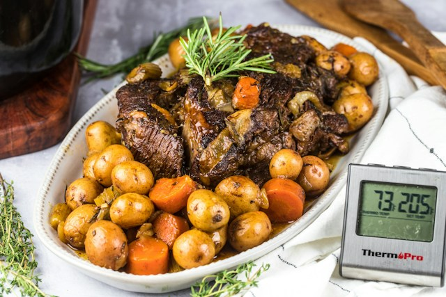

Home
Slow Cooker Pot Roast

A tender, slow-cooked beef roast seasoned
with garlic, herbs, and savory broth.
Served with potatoes, carrots, and onions
for a hearty homemade meal.
Ingredients
- 3 lb beef chuck roast
- 4 large carrots
- 4 potatoes
- 1 large onion
- 3 cups beef broth
- 3 cloves garlic
- 2 tablespoons olive oil
- 1 teaspoon thyme
- 1 teaspoon rosemary
- Salt and pepper to taste
Instructions
- Season the beef roast with salt and pepper.
- Sear the roast on all sides until browned.
- Place vegetables in a slow cooker.
- Place the beef roast on top.
- Add garlic, herbs, and beef broth.
- Cover and cook on low for 8-10 hours.
- Remove the roast and vegetables.
- Serve warm with cooking juices.